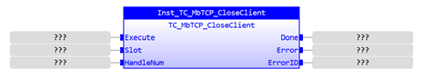
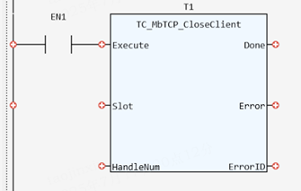

System Function.
Close Modbus TCP client connection if open.
|
Execute: BOOL; |
Rising edge requests execution |
|
Slot: INT; |
Slot number. Currently, the default value is -1. If it is not -1, an error will be reported |
|
HandleNum: DINT; |
The connection handle output by TC_MbTCP_OpenClient |
|
TRUE when function has completed normally |
|
|
Error: BOOL; |
TRUE if a program error is detected |
|
ErrorID: UINT; |
Returned error number |
When the Execute input changes from FALSE to TRUE, the Function Block issues a command to close Modbus TCP client connection according to HandleNum if open. ErrorID includes 781, 782 and 792, and the corresponding error descriptions are as follows.
|
ErrorID |
Description |
|
781 |
Slot error |
|
782 |
Connection closing error |
|
792 |
HandleNum error |
Inst_TC_MbTCP_CloseClient(Execute:= (BOOL), Slot:= (INT), HandleNum:= (DINT));
(BOOL):=Inst_TC_MbTCP_CloseClient.Done;
(BOOL):=Inst_TC_MbTCP_CloseClient.Error;
(UINT):=Inst_TC_MbTCP_CloseClient.ErrorID;


Not available.